KOREAN CHICKEN
Ingredients !
- -1.4 kg / 3 pounds whole chicken, cut into pieces or chicken wings / drumsticks / boneless chicken thigh – choose from these based on your preference, rinsed
- -2 Tbsp rice wine
- -2 tsp minced ginger
- -1 tsp fine sea salt
- -1/2 tsp ground black pepper
- -1 cup potato starch or corn starch
- -Some cooking oil for deep frying (I used rice bran oil)
- KOREAN FRIED CHICKEN SAUCE
- -3 Tbsp tomato sauce / ketchup
- -2 Tbsp to 2 1/2 Tbsp gochujang (Korean chilli paste)
- -1/4 cup honey
- -1/4 cup brown sugar
- -2 Tbsp soy sauce
- -2 Tbsp minced garlic
- -1 Tbsp sesame oil
OPTIONAL – TO GARNISH
- -roasted sesame seeds
- green onion, finely chopped or shredded using this tool
- -1 Tbsp = 15 ml, 1 Cup = 250 ml

KOREAN BULGOGI
Ingredients !
- -2 pounds thinly-sliced beef (rib eye or top sirloin) - see note
- -3 scallions, cut into 2-inch pieces
- -1 small onion, thinly sliced
- -1 small carrot, thinly sliced - optional
Marinade
- -6 tablespoons soy sauce
- -3 tablespoons water
- -4 tablespoons sugar ( or you can use 2 T sugar 2 T honey) Use more if not using Korean pear or apple
- -2 tablespoons rice wine or mirin
- -2 tablespoons minced garlic
- -2 tablespoons sesame oil
- -2 teaspoons sesame seeds
- -4 tablespoons grated Korean/Asian pear
- 1/8 teaspoon pepper
To serve bulgogi Seoul-style
- -3 ounces potato starch noodles (soaked in hot water for 20 minutes and drained)
- -3 scallions
- -1 pack enoki mushrooms (stems removed)
- -2 cups water, dashima broth, or beef broth
- -1 teaspoon soy sauce

Recipe
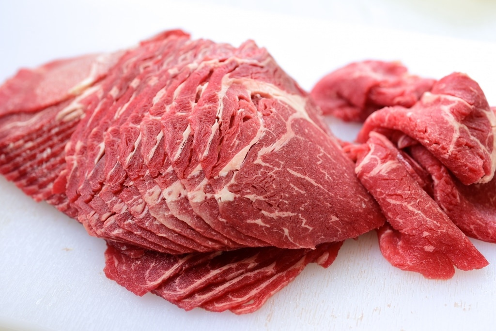
1. If using packaged pre-sliced meat, separate the slices. Remove any excess blood from the pre-sliced meat using paper towels.
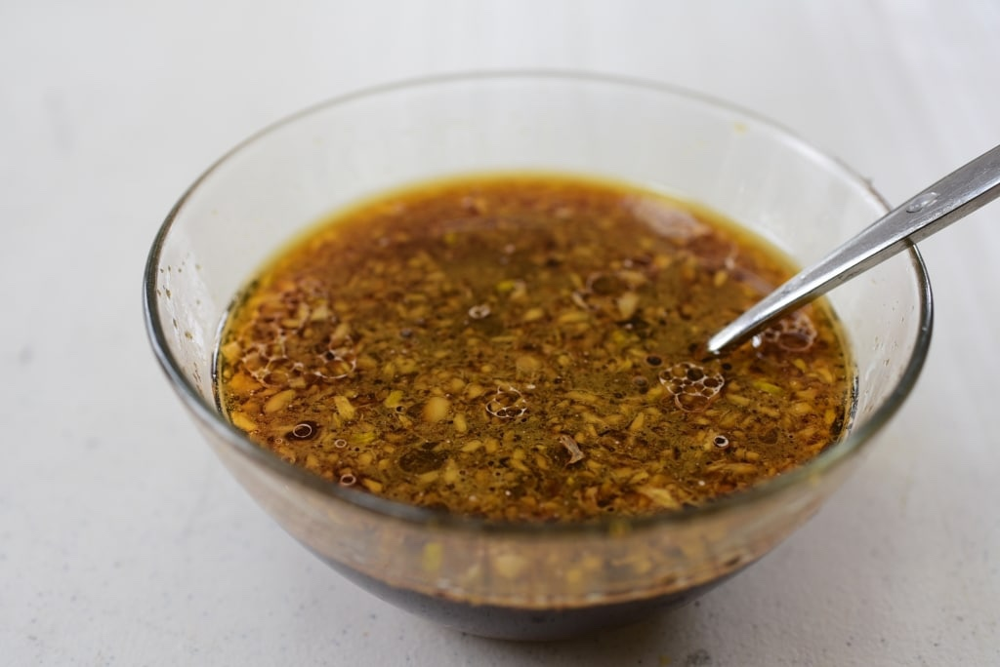
2. Mix all the marinade ingredients in a bowl.
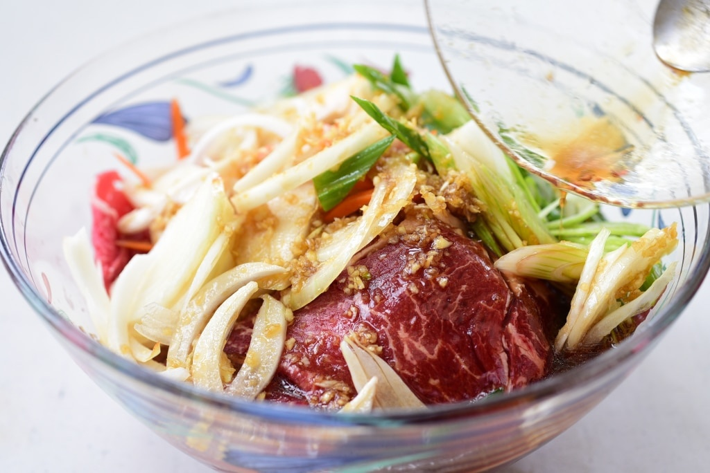
3. Place the meat and vegetables in a large bowl. Add the marinade and toss gently to combine everything well. Marinate the meat for 30 minutes to an hour, up to overnight.

4.Grilling: Grill the meat on a charcoal or gas grill or pan fry in a skillet over high heat until slightly caramelized. If pan searing, preheat the pan nice and hot and cook the meat until slightly caramelized. Do not crowd the skillet.
5. OR Stir-frying: Preheat the pan, and add the meat over high meat. You can crowd the pan to generate some liquid and let the meat cook in its own juice. Cook until the meat is no longer pink. Use all the marinade if you want some sauce at the end.
JAPCHAE
Ingredients !
- -4 ounces beef, filet mignon (or pork shoulder), cut into ¼ inch wide and 2½ inch long strips
- -2 large dried shiitake mushrooms, soaked in warm water for 2 to 3 hours, cut into thin strips
- -2 garlic cloves, minced
- -1 tablespoons plus 2 teaspoons sugar
- -2 tablespoons plus 1 teaspoon soy sauce
- -2 tablespoons toasted sesame oil
- -1 tablespoon toasted sesame seeds
- -1 large egg
- -4 ounces spinach, washed and drained
- -4 ounces of dangmyeon (sweet potato starch noodles)
- -2 to 3 green onions, cut crosswise into 2 inch long pieces
- -1 medium onion (1 cup), sliced thinly
- -4 to 5 white mushrooms, sliced thinly
- -1 medium carrot (¾ cup), cut into matchsticks
- -½ red bell pepper, cut into thin strips (optional)
- -ground black pepper
- -kosher salt
- -vegetable oil

Recipe
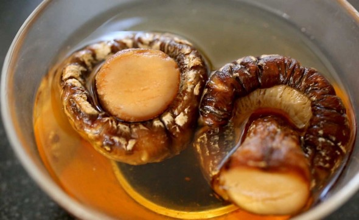

Marinate the beef and mushrooms
Put the beef and shiitake mushrooms into a bowl and mix with 1 clove of minced garlic, 1 teaspoon sugar, ¼ teaspoon ground black pepper, 2 teaspoons soy sauce, and 1 teaspoon of toasted sesame oil with a wooden spoon or by hand. Cover and keep it in the fridge.
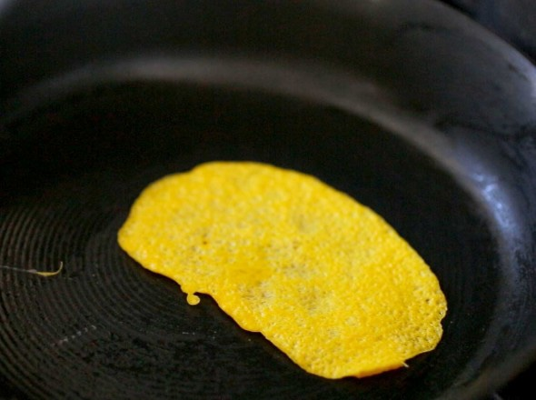
Make the egg garnish (jidan)
1.Crack the egg and separate the egg yolk from the egg white. Remove the white stringy stuff (chalaza) from the yolk. Beat in a pinch of salt with a fork.
2.Add 1 teaspoon of vegetable oil to a heated nonstick pan. Swirl the oil around so it covers the pan, and then wipe off the excess heated oil with a kitchen towel so only a thin layer remains on the pan.
3.To keep the jidan as yellow as possible, turn off the heat and pour the egg yolk mixture into the pan. Tilt it around so the mixture spreads thinly. Let it cook using the remaining heat in the pan for about 1 minute. Flip it over and let it sit on the pan for 1 more minute.
4.Let it cool and slice it into thin strips.
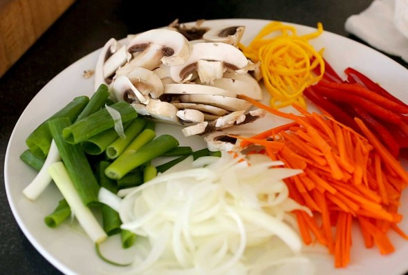
Prepare the noodles and vegetables
• Bring a large pot of water to a boil. Add the spinach and blanch for 30 seconds to 1 minute, then take it out with a slotted spoon or strainer. Let the water keep boiling to cook the noodles.
• Rinse the spinach in cold water to stop it from cooking. Squeeze it with your hands to remove any excess water. Cut it a few times and put it into a bowl. Mix with 1 teaspoon soy sauce and 1 teaspoon toasted sesame oil. Put it into a large mixing bowl.
1. Put the noodles into the boiling water, cover and cook for 1 minute. Stir them with a wooden spoon so they don’t stick together. Cover and keep cooking for another 7 minutes until the noodles are soft and chewy.
2. Strain and cut them a few times with kitchen scissors. Put the noodles into the large bowl next to the spinach. Add 2 teaspoons toasted sesame oil, 1 teaspoon soy sauce, and 1 teaspoon sugar. Mix well by hand or a wooden spoon. This process will season the noodles and also keep the noodles from sticking to each other.
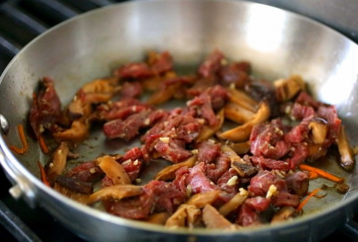
3. Heat up a skillet over medium high heat. Add 2 teaspoons vegetable oil with the onion, the green onion, and a pinch of salt. Stir-fry about 2 minutes until the onion looks a little translucent. Transfer to the noodle bowl.
4. Heat up the skillet again and add 2 teaspoons vegetable oil. Add the white mushrooms and a pinch of salt. Stir-fry for 2 minutes until softened and a little juicy. Transfer to the noodle bowl.
5. Heat up the skillet and add 1 teaspoon vegetable oil. Add the carrot and stir-fry for 20 seconds. Add the red bell pepper strips and stir-fry another 20 seconds. Transfer to the noodle bowl.
6. Heat up the skillet and add 2 teaspoons vegetable oil. Add the beef and mushroom mixture and stir fry for a few minutes until the beef is no longer pink and the mushrooms are softened and shiny. Transfer to the noodle bowl.
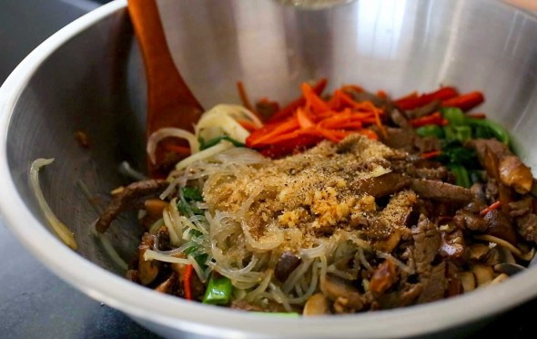
Mix and serve
7.Add 1 minced garlic clove, 1 tablespoon soy sauce, 1 tablespoon sugar, ½ teaspoon ground black pepper, and 2 teaspoons of toasted sesame oil to the mixing bowl full of ingredients. Mix all together by hand.
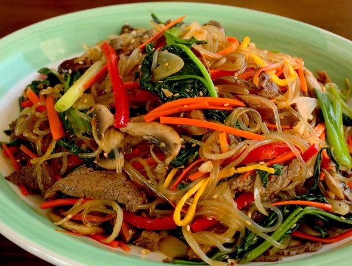
8. Add the egg garnish and 1 tablespoon sesame seeds. Mix it and transfer it to a large plate and serve.
KIMCHI STEW
Ingredients !
- -2 cups packed bite size kimchi fully fermented
- -4 ounces fresh pork belly or other pork meat with some fat or other protein choice
- -1 to 3 teaspoons gochugaru (Korean red chili pepper flakes) adjust to taste or omit
- -1 teaspoon minced garlic
- -1 tablespoon cooking oil
- -1/2 cup juice from kimchi if available
- -6 ounces tofu
- -2 scallions
- -salt (or a little bit of soup soy sauce or regular soy sauce) and pepper to taste
KOREAN SOYBEAN PASTE STEW
Ingredients !
- -3 ounces pork (preferably fatty pork) shoulder, or loin (or use beef, clams or shrimp if desired)
- -9 ounces tofu
- -1/2 medium zucchini
- -2 ounces Korean radish (mu)
- -1/4 medium onion
- -1 chili pepper green or red
- -1 scallion
- -2 tablespoons Korean soybean paste doenjang
- -1 teaspoon Korean chili pepper flakes (gochugaru) gochugaru
- -1 teaspoon minced garlic
- -2 cups water see note
- -1 teaspoon vinegar
Recipe

1. Cut the tofu and zucchini into about 1-inch cubes. Cut the radish into thin small squares. Thinly slice the onion and pepper. Roughly chop the scallion. Slice the meat into thin strips.

2. Preheat a small pot with a little bit of oil. Sauté the meat, soybean paste, and chili pepper flakes, over medium heat for 3 to 4 minutes.

3. Add the water (or anchovy broth) and stir well to dissolve the soy bean paste. Add the radish. Boil over medium high heat for 4 to 5 minutes.

4. Add the onion, garlic, tofu, zucchini, and chili pepper. Boil for an additional 5 to 6 minutes. Throw in the scallion and add the vinegar with a minute or two remaining.
TTEOKGALBI OR GRILLED MINED RIB
Ingredients !
- -3 - 4 pounds beef short ribs or 2 pounds beef chuck or brisket
Marinade
- -4 tablespoons soy sauce
- -2 tablespoons sugar
- -2 tablespoons honey
- -2 tablespoons rice wine or Mirin
- -3 tablespoons grated Korean/Asian
pear or apple grated
- 1/2 medium onion finely chopped
- 3 scallions finely chopped
- 2 tablespoons minced garlic
- 1 teaspoon minced ginger
- 1 tablespoons sesame oil
- 1/4 teaspoon black pepper
- chopped pine nuts for garnish - optional
Recipe

1. Trim excess fat. Remove the meat as much as possible from the bones. Keep the meat in the freezer for about an hour.

2. Soak the ribs in cold water for 20 to 30 minutes to remove some blood. Drain.
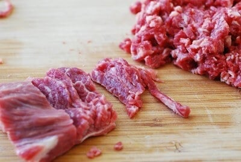
3. Grind the meat using a meat grinder or a food processor. If mincing by hand, thinly slice the meat, cut the slices into thin strips, and then cut crosswise into small pieces.
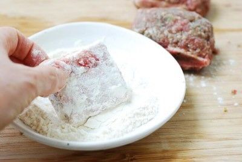
4. Mince the meat by rocking the blade back and forth into the smallest pieces.
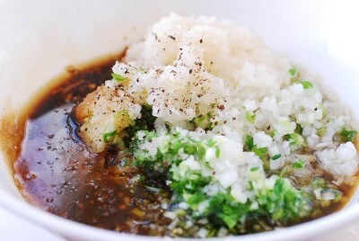
5. Mix all marinade ingredients well.
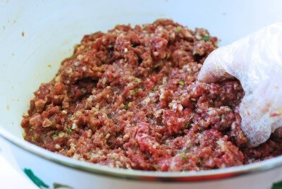
6. Add the marinade to the meat, and then mix very well. Knead the meat until it becomes a bit sticky, 2 to 3 minutes. Marinate the meat for at least 2 hours (overnight for best results).
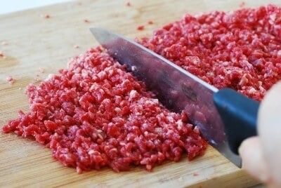
7. If using the rib bones, dredge the bone in flour.
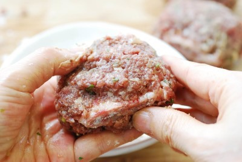 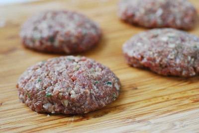
8. Attach the meat to the bone in even thickness as you’re wrapping the bone with the meat. Press with your palms so the meat is tightly attached to the meat.